Overview
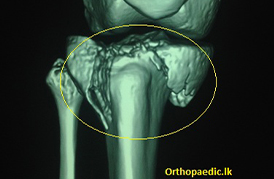
How It Happens
The upper part of the tibia breaks when the leg goes to sideways when you fall. The same basics apply here. Everything depends on how bad was your fall. A slow impact will cause simple fractures while high energy impacts will break the bone into pieces.
The surrounding soft tissues (Skin, Muscles, blood vessels and nerves) will also be damaged
Extent Of Injury
The fracture opens into the knee joint most of the time. There will be disruption of the tibial surface of the joint. Bleeding into the knee will produce knee swelling.
There will be a chance of excessive swelling of the calf if blood vessels carrying oxygen to the leg are damaged or associated with a severe crushing.
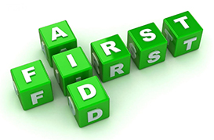
First Aids
Please try and keep the leg straight. You need to splint the leg from mid-thigh region to the ankle with a suitable device. Applying some ice will cool down the knee region.
You need to keep the limb elevated with some support all times
Please do not apply any ointments, warm herbal pastes over the injured area as they will damage/burn the skin.
You may use a clean cloth/suitable dressing to cover any wounds Please do not give anything to drink and Eat until you are advised to do so by a medical professional.
Giving a pain killer with a sip of water is accepted.
Please take any medical records/medications alone with you.

Examination And Tests
You and your leg will be examined. Any associated injury will be looked for.
Your leg will be x-rayed. A CT scan will be done if details of the fracture deemed necessary. This will help in planning operation.

Big Operation ?
This is a safe operation. It will take about 90-120 minutes to fix the fracture. It can be done under a general or spinal anesthesia.

Operation When And How
Simple fractures could be operated without delay. The main operation will be delayed when there are swelling/wounds over the injured area.
Associated blood vessel injuries will need additional operations before fracture fixation. In such instances your leg will be fixed using an external metal frame which runs across the knee. The definitive fixation will wait until the wounds heal or the swelling settles.
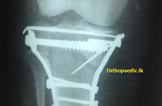
How Is It Fixed ?
The main aim of the operation is to reconstruct the joint surface and then fix it to the shaft of the bone. You will have a cut at side of the upper part of the leg. There will be an additional cut at the inner side at the same level in complex fractures.
Minor breaks can be fixed screws. There are specially designed metal plates to fix fractures of this part of the bone. Few chips of bone (bone graft) may be taken from your waist (ilium) in certain occasions. Your leg will be supported with a plaster of Paris half cast.
Going Home
Uncomplicated cases could be discharged in couple of days. However Some will need longer stays if wound complications occur or if they need additional treatment for other conditions.

Know Complications Of Injury
There are some complications of this injury. Stiffness of the knee is the commonest out of these. You could develop osteoarthritis of the knee.
FRACTURE OF THE BONE IN THE LEG (TIBIA)
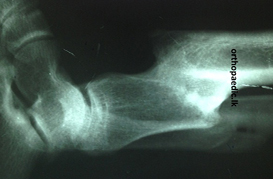
How Does It Break ?
Tibia is the main bone in the leg. It takes part in making the knee joint at the top and the ankle joint at the bottom. It lies just under the skin (Shin).Fracture of the tibia occurs after high energy trauma in the young adults. This is commonly seen after motor bike accidents in Sri Lanka. It can break easily in the elderly after a simple fall. Bone injury may damage other tissues around it. Major blood vessel injury and nerve injury are very important out of these. High energy trauma will breach the skin and commonly lead to an open fracture where bone end could be exposed to the environment.
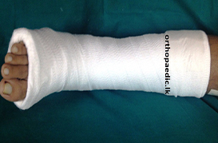
How Was It Treated In The Past?
Older days when a proper orthopaedic service and fracture fixation methods were not well developed, the patients were treated without operation. The fractures were usually managed in a plaster of Paris cast/slab. Plaster of Paris provides the function of wooden strips used in indigenous treatment. If you leave this fracture for three months immobilized, it will heal. The patients were kept bed bound for three months. There were lots of plaster related complications. Fractures healed with this method with the expense of shortening of the limb and various deformities. Some fracture did not heal at all. In this way, it will take about four to five months before someone walks again.
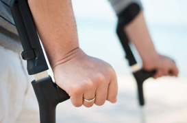
Are We Still The Same ?
NO. Fortunately, fracture of the shaft of tibia treatment has evolved so much that the fracture can be fixed under 30 minutes. Patient could start walking as early as next day with a help of a walking frame or pair of crutches
Why Should This Fracture Fixed Without Delay?
We want you to be up and about as soon as possible. Next point is we want you to be back in your normal level of activities and get back to your job as early as possible. Why should you waste time, waste three months for your life, when there is a very good and guaranteed treatment option is available. You will hardly get mal alignments and shortening of the leg.
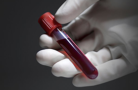
Will I Be Subjected To More Tests?
You will only need plain Xrays for this. However your blood will be checked as required.
Is It A Big Operation?
It is a major operation but done in a smaller way. Most of the time, it can be done with a cut (2-3 inches) just below your knee cap. In difficult cases there may be an additional cut in outer mid-calf area
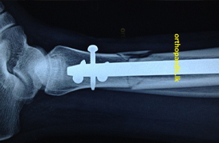
What Is Used To Fix This Fracture?
The latest modern way of fixation is with a intramedullary locking nail (This a metal tube sent inside the canal of the leg bone)

Which Part Of The Bone Can Be Fixed This Way ?
Many fracture types of the shaft of the bone
What Type Of Anaesthesia Is Used For This Operation?
Please read modes of anesthesia for lower limb surgery
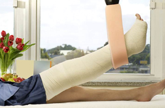
Will There Be A Plaster Of Paris Slab/Cast Applied After The Operation?
No
How Long Should I Be In The Hospital?
It is usually a two-three nights stay.
When Can I Start Walking?
With simple breaks of the shaft, you could be walking very next day with help of a walking frame. There may be a little delay to walk if you have a complex fracture.
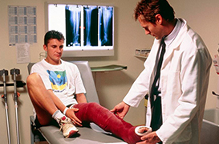
When Is The Wound Check After Discharge?
Your wound needs checking in a week and then at two weeks. Sutures, clips are taken out at this time approximately.

How Long Will It Take The Fracture To Heal?
It is around 8-10 weeks. It heals without any limb shortening or deformity.
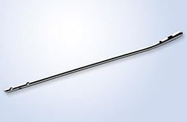
Will The Nail Need Removal?
Well, usually not unless indicated to do so. It can be kept lifelong without a problem. We will leave it in place minimum of 18 months before removal.

Will I Be Able To Walk Through Body Scanners At Air Ports Without A Problem?
This is very common question. Do not worry. It will not be a problem.